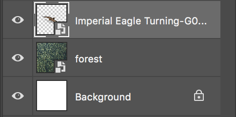
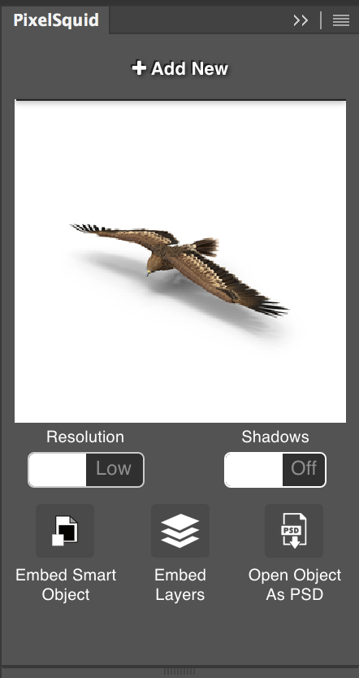

Ready to Download the Plugin?
Download the plugin from Adobe, or use one of our custom installers for Mac OS or Windows


Download the plugin from Adobe, or use one of our custom installers for Mac OS or Windows
Click on the object in the gallery to add to your composition.
More items can be added by using the `Add to Photoshop` button in search results.
After the object loads, you can click and drag in this window to spin the object.
As you rotate, the object updates so you select the most natural angle.
Every image is available with pixel-perfect transparency, with or without shadows, and as 600 or 2k pngs.
For extra control, you can download the layered PSD file and embed as a smart object or extract the layers directly in your composition.